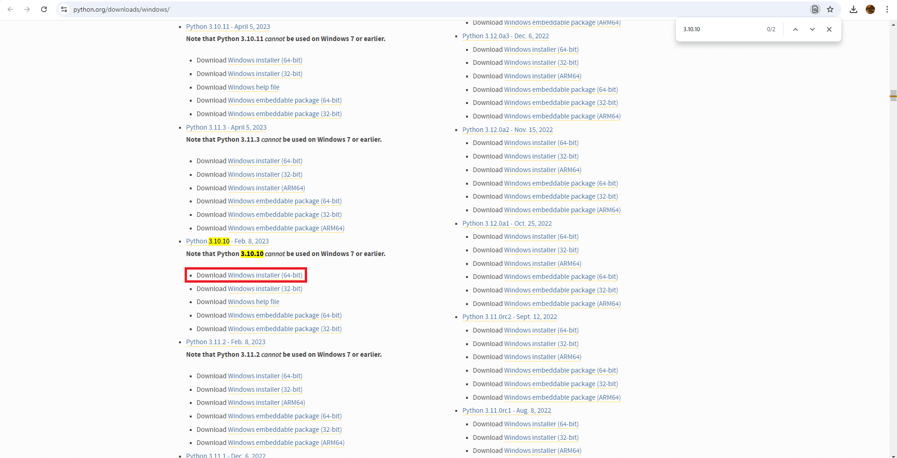

Application Of Stable Diffusion In Unity Using ComfyUI
Description
This documentation will walk you through:
Prerequisits
- Windows 7+
- NVIDIA GPU (Optional but highly recommended. Otherwise, having a strong CPU)
- ~10-50 GB of free storage
License
You may freely share & edit this documentation. This documentation is free and made only for education purposes. The author(s) are not responsible for ANY actions you may take while using the AI.
Contributing
Contribute to this documentation here
Install Python
ComfyUI requires Python for its features. Don't worry, this will not affect anything on the Unity side!
We'll be using Python 3.10.10 for Windows. Please make sure your Windows machine is higher than Windows 7, or it won't work!
-
Install Python here
-
To search for Python 3.10.10 with ease, hold
CTRL+Hand search for "3.10.10" in the search bar
-
After downloading the installer, double click it to launch the exe.

-
Make sure "Add Python to environment vairables" is checked in advanced options!

-
If you already have Python installed on your computer, just click on "Modify" and ensure "Add Python to environment vairables" is checked

Install Git
Git is NOT the same as Github Desktop! Git will be used to access and clone online repos into your existing project.
-
Install Git here

-
Double click the installer and use default settings for all the options (Keep pressing next until the download starts)

-
Wait for the install to complete!

Install ComfyUI
ComfyUI will be the interface where you build your stable diffusion workflow. It also serves as a server (using localhost)!
-
Download ComfyUI using this
-
Unzip the folder to somewhere easily accessible. I'd recommend unzipping the file to a drive that has at least 10-20 GB of free memory as some of the necessary files are quite large!
-
Double click on the
run_nvidia_gpubatch file to start the ComfyUI server. If your computer doesn't have a NVIDIA GPU, you can use your CPU by runningrun_cpuinstead, but be warned: the image generation time might take excrutiatingly long and the process is extremely taxing on your CPU!
-
This should pull up a command prompt indicating the server is running. After a while, a webpage should open on your default browser. This will be the interface you'll be working with.

Install ComfyUI Manager
ComfyUIManager is an extension for ComfyUI. Think of extensions as mods for a game. ComfyUIManager will help you manage all sorts of features such as installing custom nodes, installing AI models, and many more!
-
Download ComfyUIManager using this
-
Unzip the file to
ComfyUI_windows_portable\ComfyUI\custom_nodes -
Restart the server by closing the command prompt running the server, and double clicking on
run_nvidia_gpu. Refer back to Comfy UI for more details. -
If you did everything correctly, you should see an additional section below the sidebar called
Manager.
Install Model
Finally, we need to install a model. The Load Checkpoint node can be interpreted as the loading the "AI model" used for image generation. Various models are available online for download, each differing in speed and quality based on the data used during their training. Choosing the right model is crucial, as it directly impacts the art style and performance of your project.
-
A common
modelused issd-xl 1.0. We can try using thismodelfor now. Inside ComfyUI, open up the ComfyUIManager by clicking on theManagerbutton located at the bottom of the sidebar. Refer to ComfyUIManager if you don't see it. -
Click on the
Model Managerbutton and search forSDXLin the search bar. InstallSDXL-Turbo 1.0. -
After the installation is done, you'll see that ComfyUIManager prompts you to restart ComfyUI to see the changes. Press the
restartbutton to restart ComfyUI. (I used ComfyUI Impact Pack as an example. You don't have to download it on your end.) -
After the server restarts, assign the
SDXL-Turbo 1.0checkpoint in theLoad Checkpointnode.
-
Then click on the
Queue Promptbutton at the top of the sidebar. You can tell which node ComfyUI is currently on by looking for the green outline on the nodes. You can also check the Command Prompt for more details. -
After the generation is done, you can see the image result displayed under the
Save Imagenode. Congratulations! You've used ComfyUI to generate your first ever AI art! You're now the #1 enemy for all artists!
Unity Integration
-
To communicate with ComfyUI through Unity, you'll need to save your current
workflowas anAPI. ThisAPIis saved as a JSON file. -
To save your current
workflowas anAPI, click on theSave (API Format)on the sidebar. You can then rename this workflow and download it.
-
If you do not see this, go to
settings>Comfy>Enable Dev Mode.
-
Opening the JSON file will reveal a huge chunk of text. This is your workflow in JSON format. Don't wory, the only 2 things you need to worry about for now are keys
7and8. They are thepositiveandnegativeprompts respectively. Do note that the keys are directly related to the number of nodes you have in yourworkflow, so DO NOT use them as identifiers!
-
Moving over to Unity, we'll be creating 3 scripts.
ComfyPromptCtr: This script handles the queueing of prompts.ComfyWebsocket: This script handles the websocket connection with ComfyUI.ComfyImageCtr: This script handles the recieving / processing of the resulting image.
-
Do note that this is my method of doing this. If you have a better method, feel free to use that instead.
Comfy Prompt Ctr
-
We'll need to define a few vairables first:
Response Datais aholder classfor theprompt_idof the current prompt ComfyUI is generating. This is for tracking purposes.promptJsonis astringthat stores the API JSON mentioned in Unity Integration.pInputandnInputare unity Input Fields for taking the player's input.
[System.Serializable] public class ResponseData { public string prompt_id; } [SerializeField] private string promptJson; [SerializeField] private InputField pInput, nInput; -
Next, we create a function to call to queue the prompt. We'll also be making use of Unity's
web requestto upload the JSON API to ComfyUIasynchronouslythrough a coroutine.-
Since ComfyUI runs on port 8188 on local host, we can hard code the web URL to
http://127.0.0.1:8188. We can then add/promptat the back to access the prompt queue in ComfyUI.private string GeneratePromptJson() { string guid = Guid.NewGuid().ToString(); string promptJsonWithGuid = $@" {{ ""id"": ""{guid}"", ""prompt"": {promptJson} }}"; return promptJsonWithGuid; } -
We'll also create a function that generates a random GUID to be sent to ComfyUI. This will be the
promptIDfor each prompt. This is to make identifying one prompt from another easily. This function will then format it as JSON and return the string. -
We then modify the Positive and Negative prompts in the JSON API to
PpromptandNpromptrespectively. This is crucial as we'll be usingstring.Replace()to manipulate the JSON API string to add in the player's own Positive and Negative prompts. -
We then create a web request and send the JSON API to the prompt queue in ComfyUI. Upon getting the confirmation, ComfyUI will queue the prompt and send back the
prompt_idin JSON format, which we can format and parse it using ResponseData and then assign it to the websocket'spromptID.public void QueuePrompt() { StartCoroutine(QueuePromptCoroutine(pInput.text,nInput.text)); } private IEnumerator QueuePromptCoroutine(string positivePrompt,string negativePrompt) { string url = "http://127.0.0.1:8188/prompt"; string promptText = GeneratePromptJson(); promptText = promptText.Replace("Pprompt", positivePrompt); promptText = promptText.Replace("Nprompt", negativePrompt); Debug.Log(promptText); UnityWebRequest request = new UnityWebRequest(url, "POST"); byte[] bodyRaw = System.Text.Encoding.UTF8.GetBytes(promptText); request.uploadHandler = (UploadHandler)new UploadHandlerRaw(bodyRaw); request.downloadHandler = (DownloadHandler)new DownloadHandlerBuffer(); request.SetRequestHeader("Content-Type", "application/json"); yield return request.SendWebRequest(); if (request.result != UnityWebRequest.Result.Success) { Debug.Log(request.error); } else { Debug.Log("Prompt queued successfully." + request.downloadHandler.text); ResponseData data = JsonUtility.FromJson<ResponseData>(request.downloadHandler.text); GetComponent<ComfyWebsocket>().promptID = data.prompt_id; } }
-
Comfy Websocket
-
We'll need to define a few vairables first:
-
The ComfyUI
serverAddress. As mentioned in ComfyPromptCtr, since ComfyUI is running on local hostport 8188, we can just hardcode this address for the sake of simplicity. -
The
clientIDfor the client connecting to the server. This is required for each connection. -
The
client webSocketconnection will be used to establish a constant connection with ComfyUI. -
ImageCtris referenced here to pass the image as reference once its recieved by the websocket.
private string serverAddress = "127.0.0.1:8188"; private string clientId = Guid.NewGuid().ToString(); private ClientWebSocket ws = new ClientWebSocket(); public ComfyImageCtr comfyImageCtr; public string promptID; -
-
We'll modify the
Start()to be an async operation and await for the connection to the websocket using the hardcodedserverAddressandclientID. -
We'll then call
StartListening()to listen for any updates in the server.async void Start() { await ws.ConnectAsync(new Uri($"ws://{serverAddress}/ws?clientId={clientId}"), CancellationToken.None); StartListening(); } -
StartListening()is an async function that creates abufferto store the response from the comfyUI server. While the websocket is open and the response from the server has not ended yet, we'll keepReceiveAsync()and storing it into thebuffer. -
We then check if the message is a close message, and if so, await a graceful shutdown of the websocket. Else, parse the message to string.
-
Upon getting the response form the server in string format, we can then check for the string
"queue_remaining: 0". This means that comfyUI has finished processing the image, which causes the queue to change from1to0. -
Once we know ComfyUI is done, we can send the promptID to
ComfyImageCtrfor it to download and process the image.private async void StartListening() { var buffer = new byte[1024 * 4]; WebSocketReceiveResult result = null; while (ws.State == WebSocketState.Open) { var stringBuilder = new StringBuilder(); do { result = await ws.ReceiveAsync(new ArraySegment<byte>(buffer), CancellationToken.None); if (result.MessageType == WebSocketMessageType.Close) { await ws.CloseAsync(WebSocketCloseStatus.NormalClosure, string.Empty, CancellationToken.None); } else { var str = Encoding.UTF8.GetString(buffer, 0, result.Count); stringBuilder.Append(str); } } while (!result.EndOfMessage); string response = stringBuilder.ToString(); Debug.Log("Received: " + response); if (response.Contains("\"queue_remaining\": 0")) { comfyImageCtr.RequestFileName(promptID); } } } -
To ensure the closure of the websocket when it's no longer needed (4e.g. when player exits game / switches scene), we close the websocket connection in
OnDestroy().void OnDestroy() { if (ws != null && ws.State == WebSocketState.Open) { ws.CloseAsync(WebSocketCloseStatus.NormalClosure, string.Empty, CancellationToken.None); } } -
BONUS! Check the
responsestring from ComfyUI, you are be able to create a really cool loading bar for the image generation in your project!
Comfy Image Ctr
-
We only need a reference to a UI image to display the output image.
[SerializeField] Image outputImage; -
We'll then create the
RequestFileName()being called in Comfy Prompt Ctr. It takes in the promptID that is ready for image downloading and starts a coroutine for async purposes. -
Inside the
RequestFileNameRoutine()coroutine, we can hardcode the URL to access thehistoryof the prompt (using thepromptID). We can then create awebrequestto access the history using the URL and look for the output image. Once we successfully locate the history, we can then proceed to download the image.public void RequestFileName(string id) { StartCoroutine(RequestFileNameRoutine(id)); } private IEnumerator RequestFileNameRoutine(string promptID) { string url = "http://127.0.0.1:8188/history/" + promptID; using (UnityWebRequest webRequest = UnityWebRequest.Get(url)) { yield return webRequest.SendWebRequest(); switch (webRequest.result) { case UnityWebRequest.Result.ConnectionError: case UnityWebRequest.Result.DataProcessingError: Debug.LogError(": Error: " + webRequest.error); break; case UnityWebRequest.Result.ProtocolError: Debug.LogError(": HTTP Error: " + webRequest.error); break; case UnityWebRequest.Result.Success: Debug.Log(":\nReceived: " + webRequest.downloadHandler.text); string imageURL = "http://127.0.0.1:8188/view?filename=" + ExtractFilename(webRequest.downloadHandler.text); StartCoroutine(DownloadImage(imageURL)); break; } } } -
To download the image, we first need a URL to said image through using the filename of the image. We have a function called
ExtractFilename()just for that. -
The result from the web request should look something like this:
{ ... "outputs": { "9": { "images": [ { "filename": "ComfyUI_00449_.png", "subfolder": "", "type": "output" } ] } }, ... } -
We'll have to extract
"ComfyUI_00449_.png"from this long result JSON in order to create a URL to download this image. Do note that you'll have to modify this function when usingcontrolnets, more on that later.-
First up, we'll use basic string manipulation to locate where
"filename":is. -
We then find the end index, which we use
","as the identifier. -
We then extract the string between the end of
"filename":and before",". -
Lastly, we remove
""from the string to get the filename and return it.
string ExtractFilename(string jsonString) { string keyToLookFor = "\"filename\":"; int startIndex = jsonString.IndexOf(keyToLookFor); if (startIndex == -1) { return "filename key not found"; } startIndex += keyToLookFor.Length; string fromFileName = jsonString.Substring(startIndex); int endIndex = fromFileName.IndexOf(','); string filenameWithQuotes = fromFileName.Substring(0, endIndex).Trim(); string filename = filenameWithQuotes.Trim('"'); return filename; } -
-
Once we have the filename to download, we can hardcode another URL:
"http://127.0.0.1:8188/view?filename="and append the filename to the back of this string to get the complete URL to download the image.- We then send a webrequest to download the image as a texture using
UnityWebRequestTexture.GetTexture(). We then wait for the request to be sent. - After getting a response, we can check if the webrequest was successful and if so, convert it to a
Texture2Dand assign it to the UI Image.
private IEnumerator DownloadImage(string imageUrl) { yield return new WaitForSeconds(0.5f); using (UnityWebRequest webRequest = UnityWebRequestTexture.GetTexture(imageUrl)) { yield return webRequest.SendWebRequest(); if (webRequest.result == UnityWebRequest.Result.Success) { Texture2D texture = ((DownloadHandlerTexture)webRequest.downloadHandler).texture; outputImage.sprite = Sprite.Create(texture, new Rect(0, 0, texture.width, texture.height), Vector2.zero); } else { Debug.LogError("Image download failed: " + webRequest.error); } } } - We then send a webrequest to download the image as a texture using
Comfy Image Saver
-
After recieving the image, you might want to save it somewhere first instead of immediately displaying it on a UI Image. To do this, you can either:
- Set up your own server and save it there.
- Save the image locally.
For the sake of simplicity, let's go with saving locally.
-
Create a class called
ImageSaver. Please make it a static class so you can access it anywhere without needing to attach it to the gameobject. My 1 brain cell made it a monobehaviour and I'm lazy to change it, so for all the functions show below, addstaticbeforwvoid.Do: public static class ImageSaver {} NOT: public class ImageSaver : MonoBehaviour {} -
We can then create a function called SaveImageToLocalDisk that takes in the texture and the filename of the image to save. To save a texture as a PNG, we have to encode it to PNG using
EncodeToPNG()and store it within abyte array. We can then useFile.WriteAllBytes()to save the image to thepersistentDataPath.public void SaveImageToLocalDisk(Texture2D texture, string fileName) { if (texture == null) { Debug.Log("Nothing to save to local disk"); return; } byte[] textureBytes = texture.EncodeToPNG(); File.WriteAllBytes(Application.persistentDataPath + "_" + fileName, textureBytes); Debug.Log("Saved to local disk!"); } -
To check on the texutre, you can go to
c:/> users > yourUserHere > AppData > LocalLow > DefaultCompany. If you do not seeAppData, make sure File Explorer isshowing hidden filesby enabling the setting under... > Options > View > Hidden files and folders > Show hidden files, folders, and drives > Apply. -
To Load the texture, we can create a function called
GetTextureFromLocalDisk(). The process is basically the same as saving it. But this time, I added a failsave where if the file doesn't exit in thepersistentDataPath, I will instead load a texture stored in theResourcesfolder usingResources.Load().public Texture2D GetTextureFromLocalDisk(string fileName) { byte[] textureBytes; Texture2D loadTexture; if (!File.Exists(Application.persistentDataPath + "_" + fileName)) { loadTexture = Resources.Load<Texture2D>("FYP_Q3_AI_" + fileName); loadTexture.filterMode = FilterMode.Point; return loadTexture; } textureBytes = File.ReadAllBytes(Application.persistentDataPath + "_" + fileName); loadTexture = new Texture2D(0, 0); loadTexture.LoadImage(textureBytes); loadTexture.filterMode = FilterMode.Point; return loadTexture; }
ComfyUI Audio
-
ComfyUI also supports generative audio. You'll have to download the
stable_audio_open_1.0model from Hugging Face. Unfortunately, due to fair use, you must have a Hugging Face account and take accountability for your actions while using this model. -
Download the model
safetensorfile and place it under thecheckpointsfolder in ComfyUI. You can find this folder inComfyUI > models > checkpoints. -
Next up, you'll have to download the
t5-baseclip model from Hugging Face. Place this under theclipfolder in ComfyUI. You can find this folder inComfyUI > models > clip. -
You can return to the ComfyUI webpage and load this super basic workflow using the
Loadbutton on the sidebar. Make sure to assign thet5-baseclip model in theLoad Clipnode, and thestable_audio_open_1.0model in theLoad Checkpointnode. -
Hit the
Queue Promptbutton and if you've done everything right, it should load a simple 90s melody consisting of snare drums and an electric piano!
ComfyAudioCtr
-
ComfyAudioCtris very similar toComfyPromptCtr, the only method that needs to be changed is theDowloadImage(). As of the time of writing this, you're unable to access and download the output audio usinghttp://127.0.0.1:8188/view?filename=output.flac. You are therefore unable to usewebrequestto download the audio in the web. -
Thankfully, ComfyUI stores all the images & audios in an
outputfolder locally. You can therefore usewebrequestto download the audio from this folder.-
There are some problems with this method, the most obvious one being the hardcoded file path to the
outputfolder in ComfyUI. Move ComfyUI to another location and this method will instantly break. -
Other than the vairables found in ComfyPromptCtr, we'll need the filepath to ComfyUI's
audio outputfolder. This can be found inComfyUI > output > audio.
[SerializeField] private string comfyAudioFilePath;- We'll have to then change
DowloadImage()toDownloadAudio(). Instead of accessing a web URL, we tell the webrequest to access a file location instead by putting"file://"at the front of the filepath.
private IEnumerator DownloadAudio(string imageUrl) { yield return new WaitForSeconds(0.5f); string fileName = ExtractFilenameFromURL(imageUrl); imageUrl = "file://" + comfyAudioFilePath + "/" + fileName; Debug.Log("Image URL: " + imageUrl); using (UnityWebRequest webRequest = UnityWebRequestMultimedia.GetAudioClip(imageUrl, AudioType.UNKNOWN)) { yield return webRequest.SendWebRequest(); if (webRequest.result == UnityWebRequest.Result.Success) { // Get the downloaded texture AudioClip audio = ((DownloadHandlerAudioClip)webRequest.downloadHandler).audioClip; OnRecieveAudio?.Invoke(currentID, audio); } else { Debug.LogError("Audio download failed: " + webRequest.error); } } } -
-
We'll have to make changes to Image Saver as well. Saving an
AudioClipaswavis quite complicated. I'l just link theSavWavclass for you to look through. To save the audio to thepersistentDataPath, call theSave()function. -
To load the audio into the game, we'll have to use
webrequestsagain, similar to what was done inDownloadAudio().
Advanced Features
Resources
Useful Links
-
Hugging Face is a website / community of developers creating AI related software for the community to use! This includes
Checkpoints,LORAs,Control Nets,Workflowsand many more! -
CivitAI is similar to Hugging Face, but is more specialized for sharing
CheckpointsandLORAs.
Terminology
ComfyUI
| Name | Description |
|---|---|
Nodes | A node is a visual unit that performs a specific task, connecting to other nodes via input/output ports to define a system's logic or behavior. |
Workflow | A workflow is a series of connected nodes that define the step-by-step process for generating an image, specifying how data flows between various operations to achieve the desired output. |
Checkpoints | A checkpoint refers to an AI model used for generating images, which processes input data and produces visual outputs based on the training data and algorithms embedded in the model. |
Prompts | There are 2 common prompt types. Positive and Negative prompts. The text in the positive prompt determines how the final result should look like. The text in the negative prompt determines what the AI Model should avoid in the final image. Both are used to guide the AI to acheive the best result. |
Control Net | ControlNet is an extension that allows users to guide image generation more precisely by providing additional control inputs, such as sketches or depth maps, ensuring that the output adheres more closely to a specified structure or composition. |
LORA | LoRA (Low-Rank Adaptation) is a technique that enables fine-tuning of large AI models with minimal additional data, allowing users to adjust or personalize the model's behavior for specific tasks or styles without retraining the entire model. |